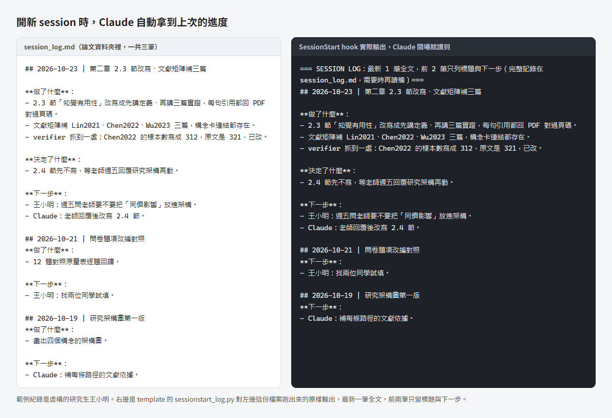

字太小的話，點圖看原尺寸。
你是不是卡在這裡
派 subagent 做完，不知道對不對 它說改好了，我要怎麼確認？ 派工前先套模板寫清楚驗收條件，產出依風險分三級，該驗的交給另一個 agent 核對。
派工到驗收 驗收分三級
規則寫了，Claude 還是忘 明明寫在 CLAUDE.md，怎麼又犯？ 一定要發生的事改用 hook 處理，例如開場注入進度、派工前檢查有沒有載入模板。
它加了哪些機制 已知限制
這是什麼、給誰
一篇論文要寫好幾個月，會跨很多個 session。Claude Code 的 auto memory 由 Claude 自己決定要記什麼，不保證記下上次做到哪；--continue 只能接回上一段對話。派 subagent 做事時，常常沒交代清楚要什麼、做完怎麼算完成；做完了，也沒有人回頭核對。這個 template 以 plugin 的形式（名稱 workflow-kit）把這幾件事分成兩類來處理。
忘了也要發生的事交給 hook，需要判斷的事寫成規則，讓 Claude 照做。
hook 是 Claude Code 在特定時間點自動執行的腳本，可以注入內容，也可以擋下動作。規則寫在 .claude/rules/ 和 skill 裡，靠 Claude 自律，不一定每次都照做。
適合用 Claude Code（終端機版）、以寫作和研究為主、一個專案會跨很多 session 的人，例如論文、文獻筆記、報告。純寫程式的話，Superpowers 這類套件比較合適，差異見這份比較 。Windows 原生在實機上跑過，WSL2（Ubuntu）跑過 hook 與安裝程式的測試，macOS 沒測過。完整的適用條件見 README 的適合誰 。
Claude Code 的設定分哪幾層、CLAUDE.md 放哪裡，是跟這套 workflow 無關的通用原理，見 ai-agent-notes 的Claude Code 設定總覽 。
怎麼裝
plugin 是主要的裝法。公司電腦擋外部套件來源時，才用 install.py 備用裝法。兩種裝法與更新路徑的對照圖在下一節。
先確認環境。Claude Code 2.1.292 以上、Python 3.8 以上，不需要 PowerShell，Git 也不是必要的。檢查方法見 README 的環境表 。
讓 AI 幫你裝成 plugin。在你的專案資料夾開 Claude Code，貼上下面這段。每一步它都會先說要跑什麼，等你同意才做。
請幫我在目前這個資料夾裝 workflow-kit（https://github.com/wayhong0928/claude-workflow-template）。每一步先說要跑什麼指令，等我同意再做。
1. 檢查 claude --version 要 2.1.292 以上；Python 依序試 python、python3、py（py 只在 Windows 試），要 3.8 以上，Windows 上跳出 Microsoft Store 或印出 "Python was not found" 算沒有。缺哪個就停下來告訴我怎麼裝。
2. 跑 claude plugin marketplace add wayhong0928/claude-workflow-template
3. 跑 claude plugin install workflow-kit@workflow-kit --scope project --config python=<第 1 步找到的 Python 指令>
4. 請我關掉 Claude Code、在同一個資料夾重開，再打 /workflow-kit:setup，照它的問題一題一題回答。
setup 寫進 .claude/ 的檔，Claude Code 會先問你要不要允許，這是正常的。
裝完後重開 claude，打 /hooks，看得到 workflow-kit 的 7 個 hook（PreToolUse、PostToolUse、PostCompact、UserPromptExpansion、UserPromptSubmit、Stop、SessionStart）才算裝好。
公司電腦擋外部套件來源時，管理員可以限制只能從核准的來源裝 plugin，上面第 2 步會失敗。改用 README 的備用裝法 ，用 install.py 把檔案複製進你的專案，原本的設定會保留，改動前先備份，不要了可以用 --uninstall 移除。
怎麼更新
兩種裝法各有自己的更新路徑，不要混用。已經用 plugin 裝過的專案，install.py 偵測到會停下來。
兩種裝法與各自的更新路徑。plugin 是建議的做法，裝與更新都靠 claude plugin 指令，裝完重開 Claude Code。install.py 是備用，把檔案複製進專案，更新時下載新版再跑一次。
裝
plugin，建議
1 加入 marketplace。2 用 --scope project 安裝，
並用 --config 指定 Python 指令。3 重開 Claude
Code，打 /workflow-kit:setup 回答問題。
更新
plugin
1 更新 marketplace 的清單。2 更新 workflow-kit。
3 重開 Claude Code。setup 複製進專案的規則檔不
會跟著換。
裝
install.py，備用
1 下載 template 到專案以外的地方。2 先加
--dry-run 預演。3 拿掉 --dry-run 正式跑。公司
電腦擋外部套件來源時用這條。
更新
install.py
下載新版，照同樣的步驟再跑一次 install.py。它會
先備份再覆蓋。
plugin 的自動更新預設關閉，要自己在 /plugin 的 Marketplaces 分頁開。已用 plugin 裝過的專案，
install.py 偵測到會停下來，兩條不要混用。
兩種裝法與各自的更新路徑。plugin 是建議的做法，裝與更新都靠 claude plugin 指令，裝完重開 Claude Code。install.py 是備用，把檔案複製進專案，更新時下載新版再跑一次。
裝
plugin，建議
1 加入 marketplace。2 用 --scope project 安裝，
並用 --config 指定 Python 指令。3 重開 Claude
Code，打 /workflow-kit:setup 回答問題。
更新
plugin
1 更新 marketplace 的清單。2 更新
workflow-kit。3 重開 Claude Code。setup 複製
進專案的規則檔不會跟著換。
裝
install.py，備用
1 下載 template 到專案以外的地方。2 先加
--dry-run 預演。3 拿掉 --dry-run 正式跑。公司
電腦擋外部套件來源時用這條。
更新
install.py
下載新版，照同樣的步驟再跑一次 install.py。它
會先備份再覆蓋。
plugin 的自動更新預設關閉，要自己在 /plugin 的
Marketplaces 分頁開。已用 plugin 裝過的專案，
install.py 偵測到會停下來，兩條不要混用。
plugin 是主要的裝法，裝與更新都靠 claude plugin 指令。install.py 是備用，把檔案複製進專案，更新時下載新版再跑一次。
plugin：跑 claude plugin marketplace update workflow-kit，再跑 claude plugin update workflow-kit@workflow-kit，重開 Claude Code。hook、skill、verifier 會換成新版；setup 複製進專案的 .claude/rules/dispatch-and-verify.md 不會跟著換，想換就請 Claude 比對它和新版的差異再決定。
備用裝法：下載新版，照 README 備用裝法的步驟再跑一次 install.py，它會先備份再覆蓋。
自動更新：plugin 的自動更新在第三方 marketplace 預設關閉。想開的話，在 Claude Code 打 /plugin，到 Marketplaces 分頁選 workflow-kit，再選 Enable auto-update。開了以後，Claude Code 在 session 開始後於背景更新，正在跑的 session 維持舊版，下一個 session 才載入新版。出處是官方文件的 Keep plugins updated 。
更新指令的完整寫法在 README 的更新一節 。
它加了哪些機制
每張圖裡，藍底的是 hook 自動做或自動擋，忘了也會發生，白底的寫在規則裡，靠 Claude 照做。每個機制的細節見運作方式 。
一個 session 從開場到收尾
一個 session 從開場到收尾的六個階段。開場注入、派工前載模板、回合結束掃控制字元由 hook 做，決定要不要派、宣告完成前驗收、收尾寫 log 靠 Claude 照規則做。
1 開場
機制
SessionStart hook 注入
session_log 最新 1 筆全文，
前 2 筆只放標題與下一步。
Claude 照規則用 1 到 2 句報告
上次進度。
2 要不要派
自律
預設自己做。要隔離大量內容、
有可獨立完成的工作包、或需要
獨立驗收，才派。
3 派工前
機制
沒載入 dispatch-template 就
派工，dispatch_gate.py 會
擋下並說明原因。
4 宣告完成前
自律
依三級決定怎麼驗。不派
verifier、跑測試貼輸出、或派
verifier。
5 回合結束
機制
本回合寫過的 .md、.json、
.py 混進控制字元，
ctrl_char_stop.py 會擋下。
6 收尾
自律加腳本檢查
用 add_session_log.py 在
session_log 頂部補一筆，腳
本檢查格式。做完的 TODO 整條
刪掉。
任何階段都可能發生。主對話超過 15 萬 token，context_guard.py 會提醒你先補 log 再下 /clear，只提醒不
擋。
hook 自動做或自動擋
靠 Claude 照規則做
你做或你決定
一個 session 從開場到收尾的六個階段。開場注入、派工前載模板、回合結束掃控制字元由 hook 做，決定要不要派、宣告完成前驗收、收尾寫 log 靠 Claude 照規則做。
1 開場
機制
SessionStart hook 注入 session_log 最新 1 筆
全文，前 2 筆只放標題與下一步。Claude 照規則用 1
到 2 句報告上次進度。
2 要不要派
自律
預設自己做。要隔離大量內容、有可獨立完成的工作包、
或需要獨立驗收，才派。
3 派工前
機制
沒載入 dispatch-template 就派工，
dispatch_gate.py 會擋下並說明原因。
4 宣告完成前
自律
依三級決定怎麼驗。不派 verifier、跑測試貼輸出、
或派 verifier。
5 回合結束
機制
本回合寫過的 .md、.json、.py 混進控制字元，
ctrl_char_stop.py 會擋下。
6 收尾
自律加腳本檢查
用 add_session_log.py 在 session_log 頂部補
一筆，腳本檢查格式。做完的 TODO 整條刪掉。
任何階段都可能發生。主對話超過 15 萬 token，
context_guard.py 會提醒你先補 log 再下
/clear，只提醒不擋。
hook 自動做或自動擋
靠 Claude 照規則做
你做或你決定
一個 session 的六個階段。開場注入、派工前載模板、回合結束掃控制字元由 hook 負責，其餘靠規則。各階段對應的檔案見運作方式 。
派工到驗收
派 subagent 到驗收的流程。先問要不要派，要派就先載入 dispatch-template，subagent 回報後依三級驗收，沒過先續問原 agent，再不過換更強的模型，最多到 opus 一輪就停下來交給使用者。
要派嗎
自律
要隔離大量內容、有可獨立
完成的工作包、或需要獨立
驗收，至少一項成立才派。
都不成立，主對話自己做。
載入模板
機制
載入
dispatch-template，
寫目標與動機、驗收條件、
回報格式，並指定模型。每
個 session 一次。沒載入
就派（compact 後沒重載
也算），
dispatch_gate.py 擋下，
只有 fork 免檢。
依三級驗收
自律
0 級不派 verifier，1 級
跑測試貼輸出，2 級派
fresh-context 的
verifier。通過就完成。
交給你決定
你
最多升到 opus 一輪。再不
過就停下來，把失敗紀錄整
理給你。
換更強的模型
自律
方向就錯，或續問後還不過。
重派時附上前兩次的失敗紀
錄。
續問原 agent
自律
方向對、細節錯時，先續問
同一個 agent 一次，它還
保有上下文。
要派
做完回報
不過
還不過
還不過
hook 自動做或自動擋
靠 Claude 照規則做
你做或你決定
派 subagent 到驗收的流程。先問要不要派，要派就先載入 dispatch-template，subagent 回報後依三級驗收，沒過先續問原 agent，再不過換更強的模型，最多到 opus 一輪就停下來交給使用者。
要派嗎
自律
要隔離大量內容、有可獨立完成的工作包、或需要獨立
驗收，至少一項成立才派。都不成立，主對話自己做。
要派
載入模板
機制
載入 dispatch-template，寫目標與動機、驗收條
件、回報格式，並指定模型。每個 session 一次。沒
載入就派（compact 後沒重載也算），
dispatch_gate.py 擋下，只有 fork 免檢。
做完回報
依三級驗收
自律
0 級不派 verifier，1 級跑測試貼輸出，2 級派
fresh-context 的 verifier。通過就完成。
不過
續問原 agent
自律
方向對、細節錯時，先續問同一個 agent 一次，它還
保有上下文。
還不過
換更強的模型
自律
方向就錯，或續問後還不過。重派時附上前兩次的失敗
紀錄。
還不過
交給你決定
你
最多升到 opus 一輪。再不過就停下來，把失敗紀錄整
理給你。
hook 自動做或自動擋
靠 Claude 照規則做
你做或你決定
派 subagent 到驗收。載模板這一步有 hook 把關，其餘靠規則。原理見 ai-agent-notes 的Subagent 入門與實戰 ，hook 怎麼擋見Hooks 與 Subagent 設定 ，完整規則見 dispatch-and-verify.md
驗收分三級
驗收分三級。0 級是照抄與單行修改，不派 verifier。1 級是批次修改、程式與腳本，跑測試並貼出輸出。2 級是論文正文、公開網站內容、規則檔與報告結論，派 fresh-context 的 verifier。
0 級 不派
產出
照抄使用者提供的內容、
session_log、TODO、搬檔、
單行修改
怎麼驗
不派 verifier，回報寫明理由
1 級 跑測試
產出
批次修改、數字加總、程式、腳
本、hook
怎麼驗
跑腳本或測試，把輸出貼出來當
證據
2 級 派 verifier
產出
論文正文與文獻筆記、公開網站
內容、規則檔、報告的結論與出
處
怎麼驗
派 fresh-context 的
verifier，只給驗收條件與檔案。
高風險判斷再加一路 opus 第二
意見
風險愈高，驗收愈獨立
拿不準在哪一級，往上一級算。verifier 不修檔這一點寫在它的指示裡，沒有技術上鎖住。
hook 自動做或自動擋
靠 Claude 照規則做
你做或你決定
驗收分三級。0 級是照抄與單行修改，不派 verifier。1 級是批次修改、程式與腳本，跑測試並貼出輸出。2 級是論文正文、公開網站內容、規則檔與報告結論，派 fresh-context 的 verifier。
0 級 不派
產出
照抄使用者提供的內容、session_log、TODO、搬檔、
單行修改
怎麼驗
不派 verifier，回報寫明理由
風險愈高
1 級 跑測試
產出
批次修改、數字加總、程式、腳本、hook
怎麼驗
跑腳本或測試，把輸出貼出來當證據
驗收愈獨立
2 級 派 verifier
產出
論文正文與文獻筆記、公開網站內容、規則檔、報告的
結論與出處
怎麼驗
派 fresh-context 的 verifier，只給驗收條件與
檔案。高風險判斷再加一路 opus 第二意見
拿不準在哪一級，往上一級算。verifier 不修檔這一
點寫在它的指示裡，沒有技術上鎖住。
hook 自動做或自動擋
靠 Claude 照規則做
你做或你決定
驗收三級，拿不準就往上一級。分級背後的原則見 ai-agent-notes 的把 AI 代理的工作環境設計得可靠 。
session_log 與 TODO 接力
session_log 記做了什麼，TODO 記還沒做什麼。收尾時兩個檔各寫一筆，下個 session 開場 hook 只注入 session_log 的最新三筆，下一步指向 TODO 的某一條。
session_log.md
記做了什麼
每筆三段，做了什麼、決定了什麼、下一步，合計 600
字內。新的一筆用 add_session_log.py 插到最上面。
下一步只寫做到哪裡中斷，指向 TODO 的哪一條，不重
抄。
TODO.md
記還沒做什麼
你要做的事和之後要做的事都寫在這裡，做完就整條刪
掉。
不要留在 log 裡，因為開場只帶最新 3 筆，舊的很快
被擠掉。
收尾時各寫一次
下個 session 開場
機制
SessionStart hook 注入 session_log 最新 1 筆全文，第 2、3 筆只放標題與下一步。Claude 先用 1 到 2 句報
告上次進度與待辦。TODO.md 不在注入範圍，靠 log 的下一步指過去。
開場注入
hook 自動做或自動擋
靠 Claude 照規則做
你做或你決定
session_log 記做了什麼，TODO 記還沒做什麼。收尾時兩個檔各寫一筆，下個 session 開場 hook 只注入 session_log 的最新三筆，下一步指向 TODO 的某一條。
session_log.md
記做了什麼
每筆三段，做了什麼、決定了什麼、下一步，合計 600
字內。新的一筆用 add_session_log.py 插到最上
面。
下一步只寫做到哪裡中斷，指向 TODO 的哪一條，不重
抄。
TODO.md
記還沒做什麼
你要做的事和之後要做的事都寫在這裡，做完就整條刪
掉。
不要留在 log 裡，因為開場只帶最新 3 筆，舊的很快
被擠掉。
log 的最新 3 筆
下個 session 開場
機制
SessionStart hook 注入 session_log 最新 1 筆
全文，第 2、3 筆只放標題與下一步。Claude 先用 1
到 2 句報告上次進度與待辦。TODO.md 不在注入範圍，
靠 log 的下一步指過去。
hook 自動做或自動擋
靠 Claude 照規則做
你做或你決定
session_log 記做了什麼，TODO 記還沒做什麼。接力的原理見 ai-agent-notes 的跨 session 接力 ，每一筆的寫法見 session-log-kit 的 README 。
TODO 側欄（選用）
TODO 側欄的資料流，白話版。你寫的 TODO、session_log 的下一步和計畫檔由 todo_core.py 整理。開場清單是它當場印的，/todo 和側欄讀它寫的 todo_index.json。
你寫的檔
TODO.md、session_log 的
下一步、goal 計畫檔。
todo_core.py
機制
開場清單當場印出；
/todo 與側欄讀它寫的
todo_index.json。
你看到的
開場清單、/todo、TODO 側欄、
輸入框上方的下一步。
hook 自動做或自動擋
靠 Claude 照規則做
TODO 側欄的資料流，白話版。你寫的 TODO、session_log 的下一步和計畫檔由 todo_core.py 整理。開場清單是它當場印的，/todo 和側欄讀它寫的 todo_index.json。
你寫的檔
TODO.md、session_log 的下一步、goal 計畫檔。
todo_core.py
機制
開場清單當場印出；/todo 與側欄讀它寫的
todo_index.json，它只寫這一個檔。
你看到的
開場清單、/todo、TODO 側欄、輸入框上方的下一步。
hook 自動做或自動擋
靠 Claude 照規則做
選用的 /todo plugin（todo@workflow-kit）把幾個專案的 TODO 集中起來看。到期日過了，開場清單只提醒，不移動也不修改任何檔。側欄怎麼做見 ai-agent-notes 的Mods ，設定與格式見 todo plugin 的 README 。
護欄
回合結束時，ctrl_char_stop.py 會掃本回合寫過的檔，混進看不見的控制字元就擋下，同一回合最多擋 1 次。
主對話超過 15 萬 token，context_guard.py 提醒你補 log 再下 /clear，只提醒，不擋。
不能改的原始資料（PDF、問卷原始檔）可以上鎖。plugin 版在 setup 的問題裡選，備用裝法用 --protect。Claude 用編輯工具或 > 重導向都改不了，腳本自己開檔寫入擋不到，說明見 README 的保護原始資料 。
hook 自己出錯時一律放行，不會卡住工作。
已知限制
規則檔和 dispatch-template 是寫給 Claude 看的，它不一定每次都照做。會強制的只有 hook 那幾項。
hook 出錯時一律放行，不會卡住你，但壞掉時也不會有提示。改了 hook 請跑測試。
hook 用的 Python 指令名是照安裝當下的環境設的。同一個專案資料夾同時從 Windows 和 WSL 開，另一邊的 hook 會全部失敗，派工檢查也跟著失效。
實機只在 Windows 原生跑過。WSL2（Ubuntu）跑過 hook 與安裝程式的測試，macOS 沒測過。
只支援 Claude Code，Codex 不讀 .claude/。原始資料的鎖擋不到腳本自己開檔寫入。
每一條的細節和其他限制，見 README 的已知限制 。